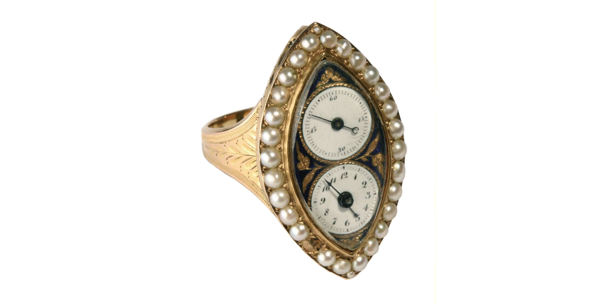

Rundgang Glanzstücke
Fingerringuhr
Genf war um 1800 das Zentrum für Schmuckuhren aller Art. Uhrmacher und Goldschmiede arbeiteten eng zusammen. Besonders beliebt waren damals kleine und kleinste Uhren. Und was lässt sich Winzigeres denken als eine Uhr in einem Fingerring? Im spitzovalen Gehäuse sieht man zwei Ziffernblätter. Unten für Stunden und Minuten und oben für die Sekunden.
Bild der Uhr

Entstanden im Rahmen des Projektstudium 2023/24 der HFU